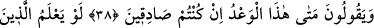

KIYÂMET
ÖYLE ÂNİ GELİR Kİ…
38. “Eğer doğru iseniz, bu tehdit ne zaman (gerçekleşecek)?” diyorlar.
39. İnkâr edenler, yüzlerinden ve sırtlarından (saran) ateşi savamayacakları,
kendilerine yardım dahi edilmeyeceği zamânı bir bilselerdi!
40. Bilâkis kendilerine o (kıyâmet) öyle âni gelir ki, onları şaşırtır. Artık onu ne
reddedebilirler, ne de kendilerine mühlet verilir.
41. Andolsun, senden önceki peygamberlerle de alay edildi; ama onları alaya
alanları, o alay konusu ettikleri şey kuşatıverdi.
42. De ki: Allâh’a karşı sizi gece gündüz kim koruyacak? Buna rağmen onlar
Rablerini anmaktan yüz çevirirler.
43. Yoksa kendilerini bize karşı savunacak birtakım ilâhları mı var? (O ilâh
dedikleri şeyler) kendilerine bile yardım edecek güçte değildirler. Onlar bizden de
alâka ve destek görmezler.
Acele isteyerek ve alay ederek “Eğer” onun bize geleceği konusundaki vaadinizde
“doğru iseniz, bu tehdit” azâb ve kıyâmet vaadi/tehdidi “ne zaman (gerçekleşecek)?”
çabucak bize gelsin “diyorlar.”
Buradaki (inkârcıların) “doğru iseniz” hitabı, vaad edilenin geleceğini haber veren
âyetleri okuyan Nebî (a.s.)’a ve mü’minleredir.